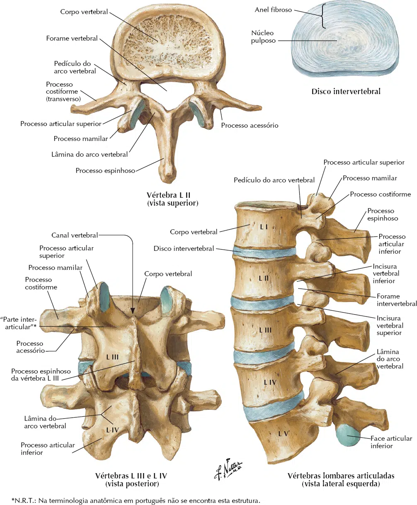

As maiores vértebras individuais são as 5 lombares.
Estas são as mais fortes na coluna vertebral, na medida em que a carga do peso corporal aumenta em direção à extremidade inferior da coluna.
Por isso, os discos cartilaginosos entre as vértebras lombares inferiores são locais comuns de lesões e processos patológicos.
Suas características são:
Corpo da vértebra grande (por sustentar grande quantidade de peso);
Processos costiformes e mamilares;
Faces articulares orientadas sagitalmente (movimento de flexão e extensão do tronco).
